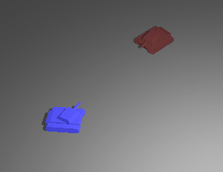

Creating an Enemy Unit
From C4 Engine Wiki
Previous section: Mouse Input - Unit Movement
In this section, we’ll add an enemy tank unit, and we’ll also add turret rotation so that the tanks can aim at a target.
Contents |
The “Player-Controlled” Flag and Setting
First step is adding a flag to the TankController to mark it as either a player-controlled tank or an enemy tank.
<Tank.h>
class TankController : public Controller { private: ... unsigned long playerControlled; ... public: ... bool IsPlayerControlled() { return playerControlled; } ... };
Initialize the flag in the TankController constructor’s initialization list:
<Tank.cpp>
TankController::TankController() : ... playerControlled(false) ... { ... }
After creating a flag for this, we can allow a level designer to mark the tank as player-controlled by adding a setting to the TankController. (See the article Defining a Custom Controller if you are unfamiliar with settings in a controller.)
Add the following function declarations and definitions for adding controller settings (Note also that C4Configuration.h is included for all Settings-related types):
<Tank.h>
... #include "C4Configuration.h" ... class TankController : public Controller { private: ... public: ... long GetSettingCount(void) const; Setting *GetSetting(long index) const; void SetSetting(const Setting *setting); ... };
<Tank.cpp>
long TankController::GetSettingCount(void) const { return (1); } Setting* TankController::GetSetting(long index) const { if(index == 0) { return (new BooleanSetting('pctl', playerControlled, "Player Controlled")); } return (nullptr); } void TankController::SetSetting(const Setting *setting) { if(setting->GetSettingIdentifier() == 'pctl') { playerControlled = (static_cast<const BooleanSetting*>(setting))->GetBooleanValue(); } }
With this, a level designer can go into the World Editor and click on the Player Controlled checkbox to mark a tank as a player tank or an enemy tank. You can try this now if you’d like. Fire up C4, open up the world by typing “world rts” in the Command Console, selecting the tank entity, and then clicking on Node->Get Info. Click on the Controllers tab, and you will see that the new Player Controlled setting is now associated with the TankController.
You can click on it, but that’s about all it does at this point, because we haven’t hooked up the playerControlled flag to do anything yet.
But Why Isn't the Setting Getting Saved?
Before we add any functionality to the playerControlled flag, there is one more thing that needs to be done. As it is right now, when you quit out of C4, the Player Controlled flag does not stick and your setting is lost. Let’s finish up the support code by adding serialization for this new setting by modifying the Pack and Unpack functions, and adding a new private function called UnpackChunk.
<Tank.h>
class TankController : public Controller { private: ... // Add the following line bool UnpackChunk(const ChunkHeader *chunkHeader, Unpacker& data, unsigned long unpackFlags); public: ... // These functions already exist, but we will be editing their definitions void Pack(Packer& data, unsigned long packFlags) const; void Unpack(Unpacker& data, unsigned long unpackFlags); };
Serialization can sometimes be a delicate situation to deal with. For instance, if this next part is not done carefully, we can very well end up with a game world that can be difficult to recover. We want the data to be read in properly, but if the new serialization code attempts to read old data that expects to be new data, it has a potential for crashing. Modify the Pack function as follows:
<Tank.cpp>
void TankController::Pack(Packer& data, unsigned long packFlags) const { Controller::Pack(data, packFlags); data << TerminatorChunk; // <-- Add this line }
Now, open up the “rts” world in C4, and SAVE IT, so that the new TankController writes the terminator chunk to the world file. After that’s done, the format of the TankController in your world file has changed, so the Unpack function has to handle this:
<Tank.cpp>
void TankController::Unpack(Unpacker& data, unsigned long unpackFlags) { Controller::Unpack(data, unpackFlags); UnpackChunkList<TankController>(data, unpackFlags, &TankController::UnpackChunk); // <-- Add this line }
You will notice that this is a little different from how the Defining a Custom Controller article packs and unpacks serialized data. The Unpack function accepts a function pointer to the UnpackChunk function to handle chunk-specific data. Here is what UnpackChunk looks like:
<Tank.cpp>
bool TankController::UnpackChunk(const C4::ChunkHeader *chunkHeader, C4::Unpacker &data, unsigned long unpackFlags) { switch(chunkHeader->chunkType) { case 'pctl': data >> playerControlled; return true; } return (false); }
In UnpackChunk, the chunk type is checked, and if it matches a specific chunk type, it processes data specific to that chunk (Reminds me of the FLI format. I miss that format). Now that we can read in the ‘pctl’ chunk type, let’s write out the ‘pctl’ chunk type to the file:
<Tank.cpp>
void TankController::Pack(Packer& data, unsigned long packFlags) const { Controller::Pack(data, packFlags); data << ChunkHeader('pctl', 4); // <-- Add this line data << playerControlled; // <-- Add this line data << TerminatorChunk; }
With the Pack function, we write out the ‘pctl’ chunk type, which contains the value of playerControlled, and then we read that value back in with the Unpack function via the ‘pctl’ chunk type. When you save and load the world, the value of playerControlled for each tank entity in the world is now maintained.
Now we’re set up to use the playerControlled flag. Look for this line in TankController::Preprocess:
<Tank.cpp>
diffuse.SetAttributeColor(ColorRGB(0.5f, 0.5f, 1.0f));
We’ll change this line so that the enemy tank will be red instead of blue:
<Tank.cpp>
if(playerControlled) diffuse.SetAttributeColor(ColorRGB(0.5f, 0.5f, 1.0f)); else diffuse.SetAttributeColor(ColorRGB(1.0f, 0.5f, 0.5f));
One other place that we’ll check for player control at this time is in the RTSCommandAction class. In the EntitySelect function, we check if the tank is currently selected before actually selecting it:
<CommandAction.cpp>
void RTSCommandAction::EntitySelect() { ... if(tankEntity) { tankController = static_cast<TankController*>(tankEntity->GetController()); if(!tankController->IsSelected()) tankController->SetSelected(true); } }
Add the playerControlled flag to this check so that the user is only allowed to select player tanks:
<CommandAction.cpp>
void RTSCommandAction::EntitySelect() { ... if(tankEntity) { tankController = static_cast<TankController*>(tankEntity->GetController()); if(!tankController->IsSelected() && tankController->IsPlayerControlled()) tankController->SetSelected(true); } }
Drop in a Red Enemy Tank
Now let’s see what an enemy tank looks like. Start up C4, and load up the world by typing “world rts” in the Command Console.
Scroll to the Entities page (again, you may have to open it by clicking on Page -> Entities in the menu bar). Click on tank and then click somewhere on top of the playfield in the upper left viewport to create a new tank entity. Again, you may have to click on reset transform to get the tank oriented correctly. At this point, feel free to move the tanks around to whatever starting position you would like:
If you haven’t done so after we changed the Pack and Unpack functions, turn on the Player Controlled flag for the first tank. Select the first tank entity (you can select it by either clicking on the blue box that represents the first tank entity or switch to the Scene Graph viewport and select the Entity node), click on Node -> Get Info, switch to the Controllers tab and enable the Player Controlled setting.
Save the world (because the world is always in trouble), fire up C4, and the game should look something like this:
Nice. We now have a red enemy tank in the game, but otherwise, it’s not that much fun. Check out the next part for adding some turret rotation to the tanks.
Turret Rotation
Turret rotation is not related to adding an enemy tank in any way, but it’s completely related to being able to fire a projectile at it, which will be covered in the next section. This part is mainly an exercise in applying transformations on a subnode (turret) of a transformed node (tank).
Let’s start off with adding variables and function declarations as usual:
<Tank.h>
class TankController : public Controller { private: ... float curTurretRotation; float reqTurretRotation; Transform4D initialTurretTransform; bool moving; void MoveTurret(Entity *entity, float dt); ... public: ... };
And then initialize the variables in the constructor:
<Tank.cpp>
TankController::TankController() : ... curTurretRotation(0), reqTurretRotation(0), initialTurretTransform(K::identity_4D), moving(false) ... { }
The variable initialTurretTransform is meant to keep track of the initial position of the turret in relation to the tank. It is initialized in the constructor merely to give it some stable values, but the real initialization occurs in the Preprocess function. Look for the last block of code in the Preprocess function that gets a hold of the turret geometry:
<Tank.cpp>
Geometry* turret = static_cast<Geometry*>(tankGeo->GetFirstSubnode()); if(turret) { turret->SetMaterialObject(0, matObject); }
Since we have a pointer to the turret here, add a line to correctly initialize initialTurretTransform:
<Tank.cpp>
Geometry* turret = static_cast<Geometry*>(tankGeo->GetFirstSubnode()); if(turret) { turret->SetMaterialObject(0, matObject); this->initialTurretTransform = turret->GetNodeTransform(); // <-- Add this line }
And then in TankController::Move(), call the MoveTurret(..) function:
<Tank.cpp>
void TankController::Move(void) { float dt = TheTimeMgr->GetFloatDeltaTime() * 0.001f; Node *node = this->GetTargetNode(); if(node) { Entity *entity = static_cast<Entity*>(node); if(entity) { MoveTank(entity, dt); MoveTurret(entity, dt); // <-- Add this line entity->Invalidate(); } } }
Then, set the moving flag at the end of the MoveTank(..) function. The moving flag is used in the MoveTurret(..) function to determine how to rotate the turret while the tank is moving and while it is not moving.
<Tank.cpp>
void TankController::MoveTank(Entity* entity, float dt) { ... moving = (travelDistance > 0.1f || !rotationArrived); }
travelDistance and rotationArrived are variables that were previously defined in the Mouse Input - Unit Movement section. The tank’s moving flag is true if the travelDistance to the waypoint is beyond a certain small distance or if the tank has not completely rotated toward the waypoint.
And finally, the definition of the MoveTurret(..) function:
<Tank.cpp>
void TankController::MoveTurret(Entity *entity, float dt) { if(!entity || (entity->GetEntityType() != kEntityTank)) return; TankController *myController = static_cast<TankController*>(entity->GetController()); if(!myController) return; Geometry* tankGeo = static_cast<Geometry*>(entity->GetFirstSubnode()); if(tankGeo) { Geometry* turret = static_cast<Geometry*>(tankGeo->GetFirstSubnode()); if(turret) { CombatWorld *world = static_cast<CombatWorld*>(TheWorldMgr->GetWorld()); C4::Array<Entity*> *tanks; if(world) { tanks = world->GetEntityTanks(); } Entity *targetTank = nullptr; for(long i = 0; i < tanks->GetElementCount(); i++) { targetTank = static_cast<Entity*>((*tanks)[i]); if(targetTank && (targetTank->GetEntityType() == kEntityTank) && (targetTank != entity)) { TankController *controller = static_cast<TankController*>(targetTank->GetController()); if(controller) { if(this->IsPlayerControlled() != controller->IsPlayerControlled()) break; } } targetTank = nullptr; } Vector3D targetDirVector(0.0f, 0.0f,0.0f); if(targetTank) { targetDirVector = targetTank->GetNodePosition() - entity->GetNodePosition(); targetDirVector.Normalize(); } if(!moving) { reqTurretRotation = C4::Atan(targetDirVector.y, targetDirVector.x); } else { reqTurretRotation = curRotation; } float deltaRotation = reqTurretRotation - curTurretRotation; while(deltaRotation < -K::pi) deltaRotation += K::two_pi; while(deltaRotation > K::pi) deltaRotation -= K::two_pi; // Check if delta rotation is larger than threshold if(C4::Fabs(deltaRotation) > 0.1f) { if(deltaRotation < 0) { curTurretRotation -= 1.0f * dt; } else if(deltaRotation > 0) { curTurretRotation += 1.0f * dt; } } Transform4D nodeTransform = initialTurretTransform; Matrix3D turretTransform; turretTransform.SetRotationAboutZ(curTurretRotation - curRotation); nodeTransform *= turretTransform; turret->SetNodeTransform(nodeTransform); } } }
All right, let’s run through the code. First thing the function does is punk out if the entity pointer is bad, if entity is not of type kEntityTank, or if there is no controller attached to the entity. Then we move on by getting the entity’s first subnode’s first subnode (whew!) which should be the turret geometry as defined by the node hierarchy:
Once we have a hold of the turret pointer, we loop through each Entity tank in the world, get a hold of its TankController, and do a comparison with this TankController.
We break out of the loop once we’ve found a TankController whose playerControlled flag is not the same as this TankController’s playerControlled flag. It’s not the best algorithm for finding an opposing tank (you may also want to check range and closeness), but it suits our needs for this scenario, in which there is only one player tank and one enemy tank. The value of reqTurretRotation depends on the value of the moving flag. If the tank is moving, the reqTurretRotation is set to the tank’s current rotation so that the turret “resets” its rotation to match with the tank. If the tank is no longer moving, we get the angle of rotation to the target by utilizing the direction vector to the target, and reqTurretRotation is set to this angle so that the turret will rotate toward the target tank.
The last part of this function generates an appropriate transformation for the turret. We start by setting nodeTransform to the initialTurretTransform (which, remember, is the turret’s position in relation to the tank when it is first initialized). Then we multiply the nodeTransform with the turretTransform, which is simply the difference in rotation between the curTurretRotation and the tank’s curRotation. After the math is done, we set the node transform to the turret geometry. Whew! That wasn’t the best explanation for what’s going on, but nothing beats reading the actual code to describe what the code actually does!

Next Step
Now that we’ve got an enemy tank in the game and turret rotation working, the next logical step is to attack the enemy. The next section Attacking the Enemy covers projectiles.